O método por trás de cada personagem que colocamos em cena — do primeiro prompt ao vídeo final. Dois estudos de caso guiam este material: Océane e Larroude.
Toda vez que se pede uma nova imagem para a IA, ela entrega uma pessoa diferente. Outro rosto, outra pele, outro olhar. Para uma campanha ou um vídeo funcionarem, cada peça precisa parecer que foi feita no mesmo dia, pela mesma equipe, com a mesma pessoa.
Este material mostra como resolvemos isso do início ao fim: da criação do personagem ao vídeo final, passando por poses, expressões e storyboard.
Definimos quem vai aparecer antes de pensar em qualquer cena.
Ampliamos o personagem para múltiplas situações sem perder a identidade.
Planejamos a sequência antes de gerar qualquer vídeo final.
Damos movimento ao personagem, mantendo a consistência do início ao fim.
Não descrevemos tudo no prompt. Quanto mais se descreve, mais a IA tenta reconciliar informações conflitantes — e o resultado fica genérico. Usamos 4 elementos que direcionam sem atrapalhar:
Quem aparece e como aparece.
O que está acontecendo na cena.
O contexto visual da cena.
A linguagem fotográfica da cena.
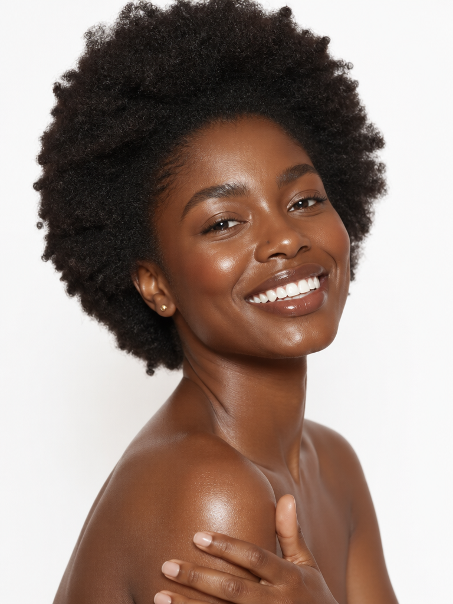
Giovanna é uma mulher brasileira negra, no início dos vinte anos, com expressão confiante e pele com glow natural. Esse foi o prompt que usamos para criar a Giovanna:
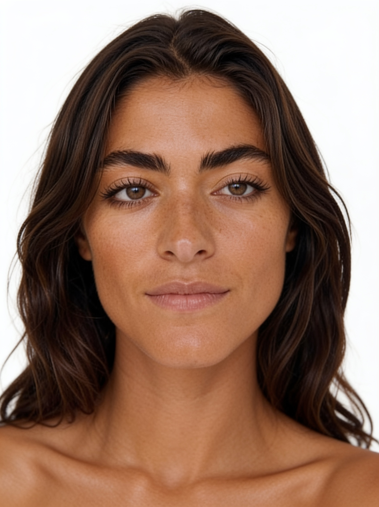
Jordana é uma mulher espanhola de 24 anos, criada para o projeto conceitual com a Larroude — pensada para carregar uma estética fashion, mais sofisticada e editorial. Esse foi o prompt que usamos para criar a Jordana:
24-year-old Spanish woman, Southern European features, caramel bronze skin, oval face, strong defined eyebrows, deep dark expressive eyes, chocolate brown wavy hair, wearing a plain white crew neck t-shirt.
Standing relaxed, natural gentle expression, facing the camera.
Clean white minimalist studio, seamless backdrop.
Soft diffused frontal light, fashion editorial style, natural skin rendering.
Depois que o personagem existe, o desafio muda. Como pedir uma pose nova, uma expressão diferente, sem a pessoa se transformar em outra pessoa?
A resposta está em como direcionamos o prompt: descrevemos a mudança — o gesto, o olhar, a emoção — e deixamos a identidade visual já estabelecida guiar o resto. Três variações que criamos para a Jordana:
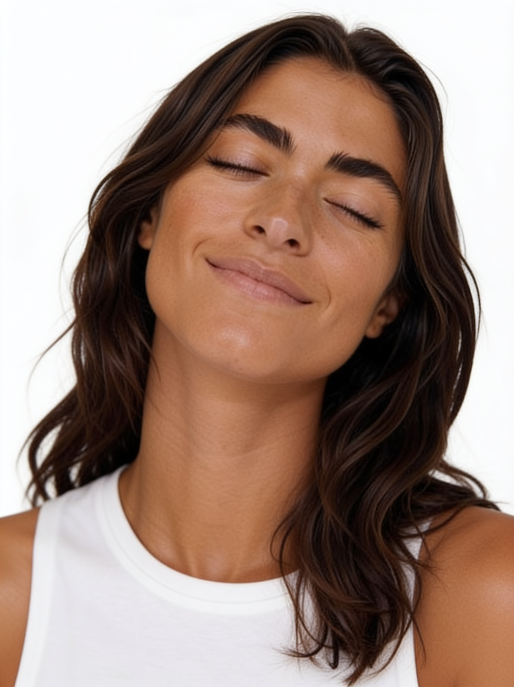
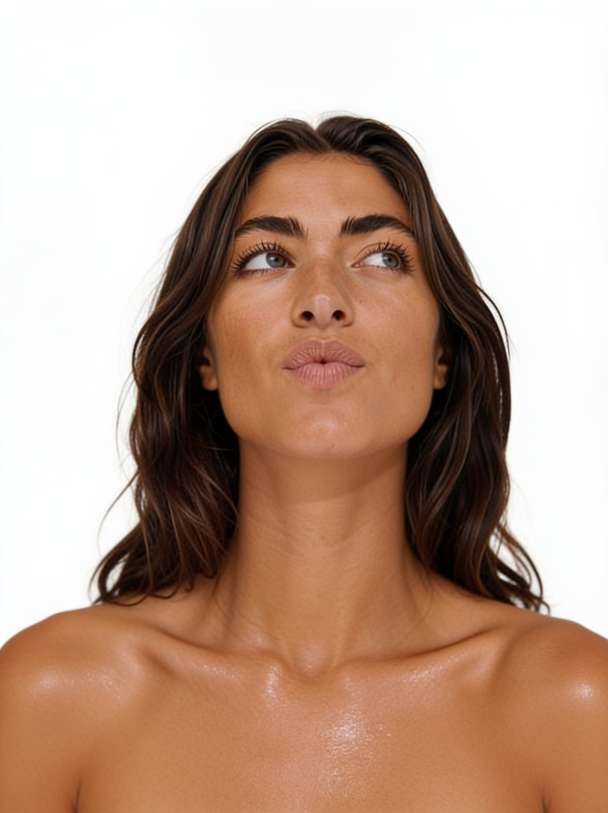
Antes de gerar qualquer vídeo final, desenhamos a sequência: as mesmas regras de identidade, luz e enquadramento precisam valer em todos os quadros — senão o personagem "quebra" entre uma pose e outra.
Esse é o storyboard de 5 poses que planejamos para a Jordana — a base para o morphing contínuo que vira vídeo na etapa seguinte.
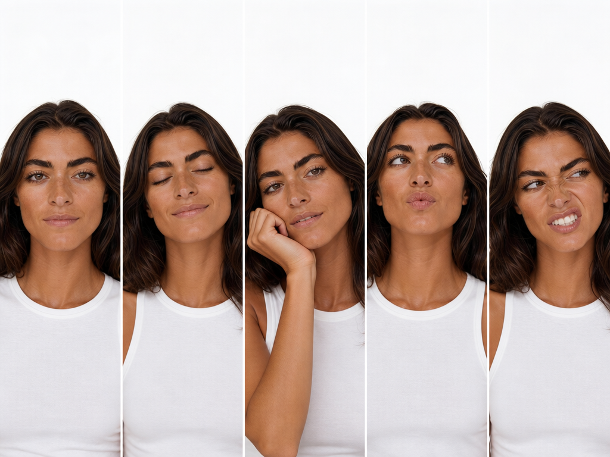
Com o personagem, as poses e o storyboard definidos, o último passo é dar movimento. Transformamos as imagens estáticas em uma transição fluida entre expressões, mantendo a mesma identidade visual do início ao fim.
Fotos, carrosséis ou vídeo — a mesma identidade se sustenta em qualquer peça, em qualquer marca.
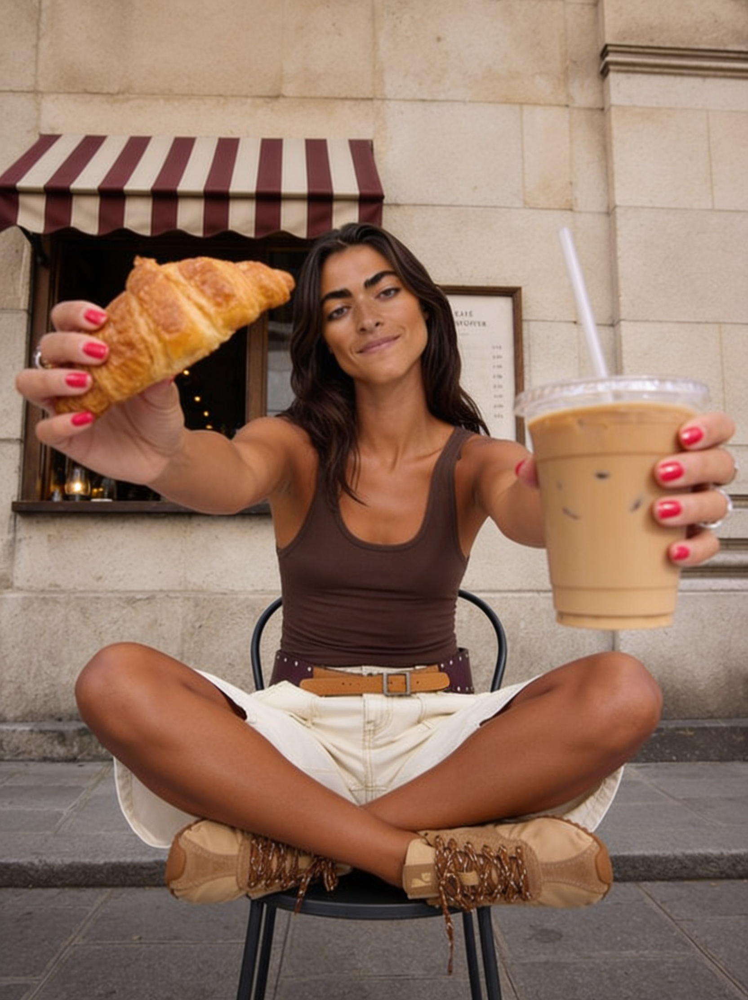
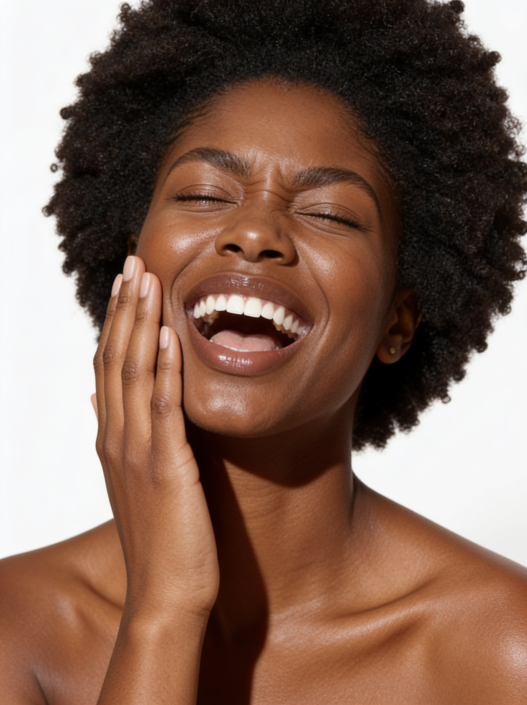
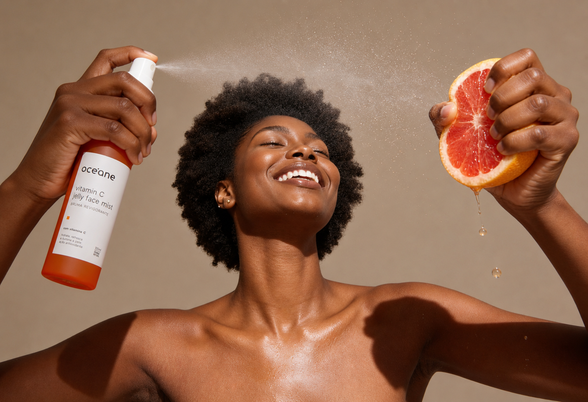
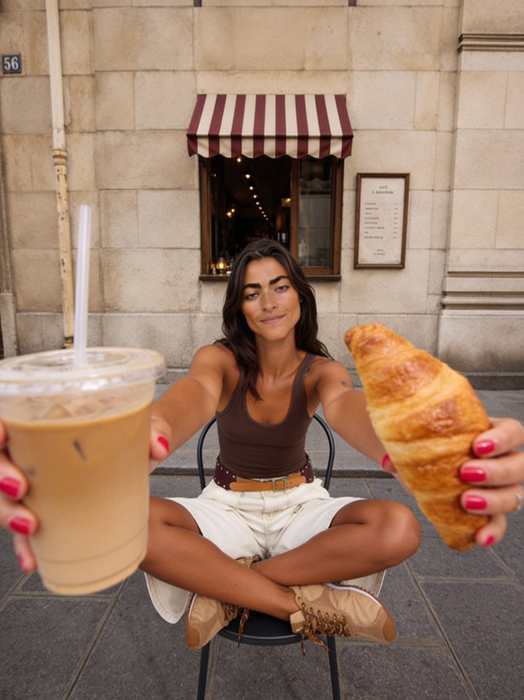
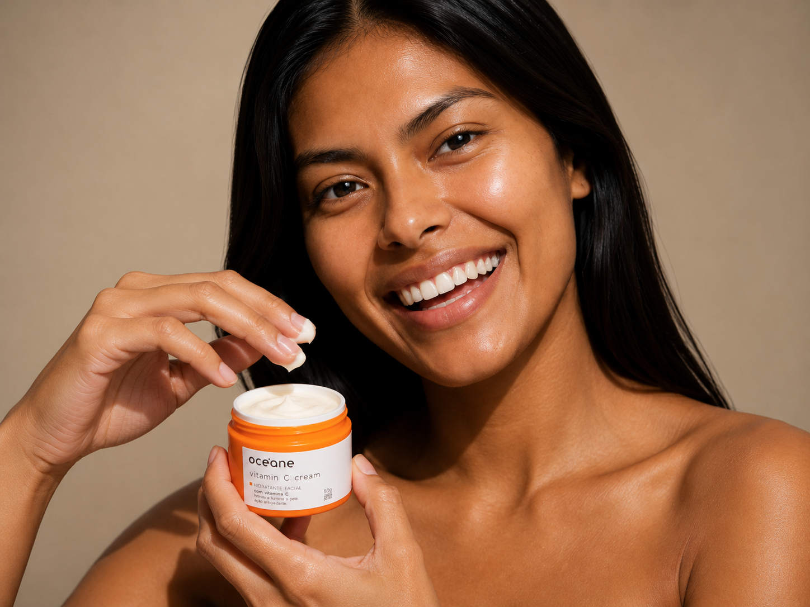
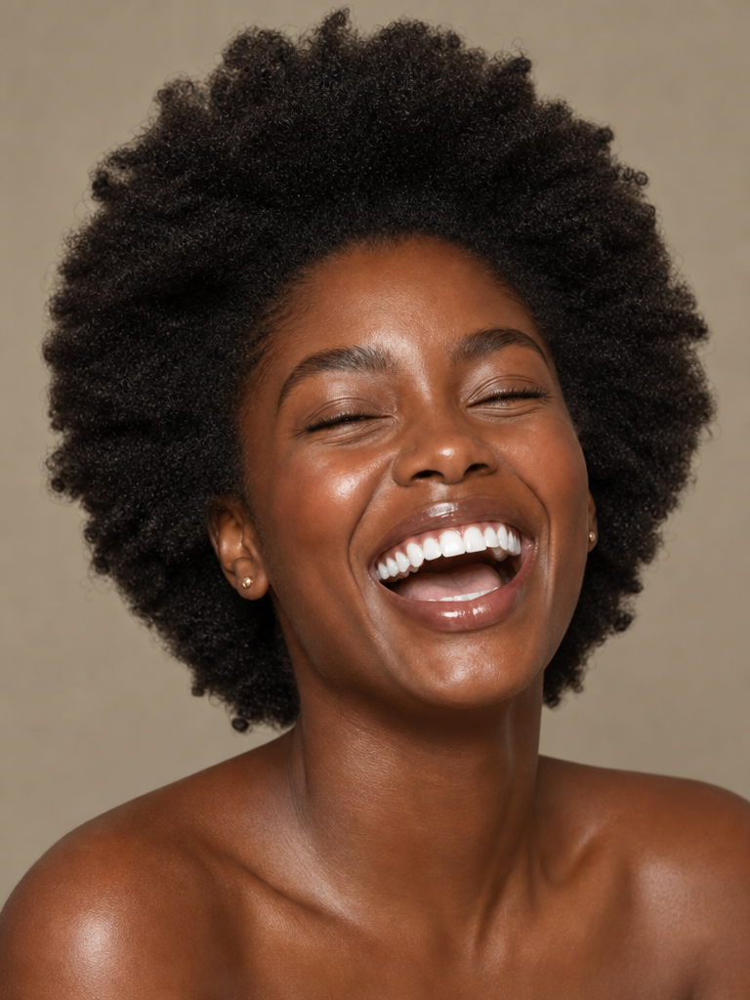
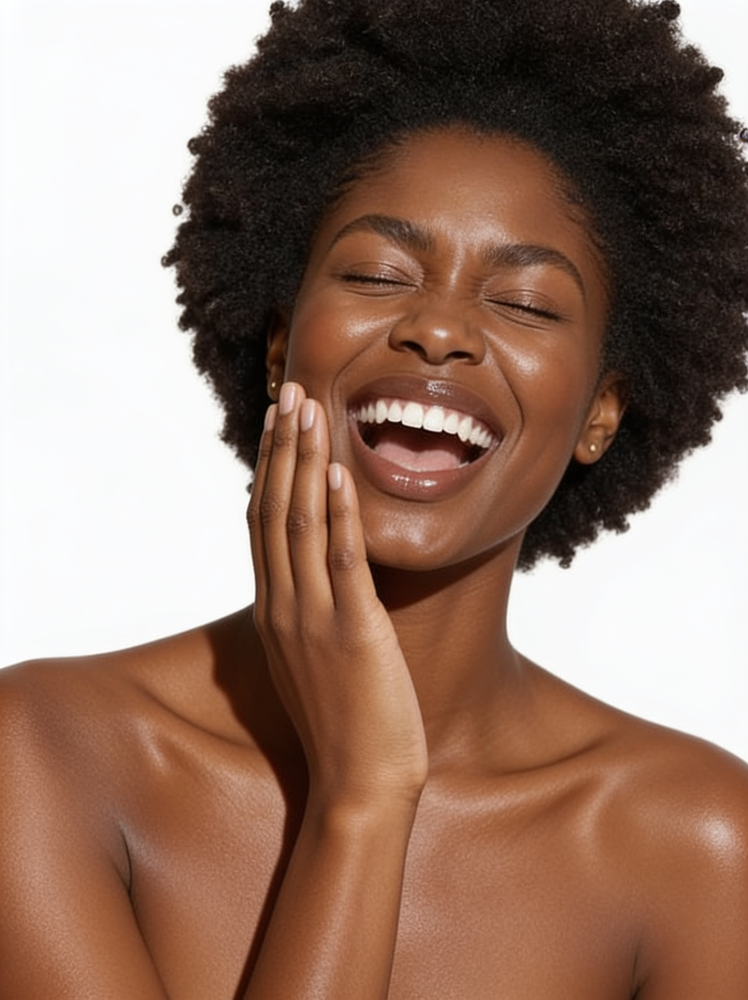
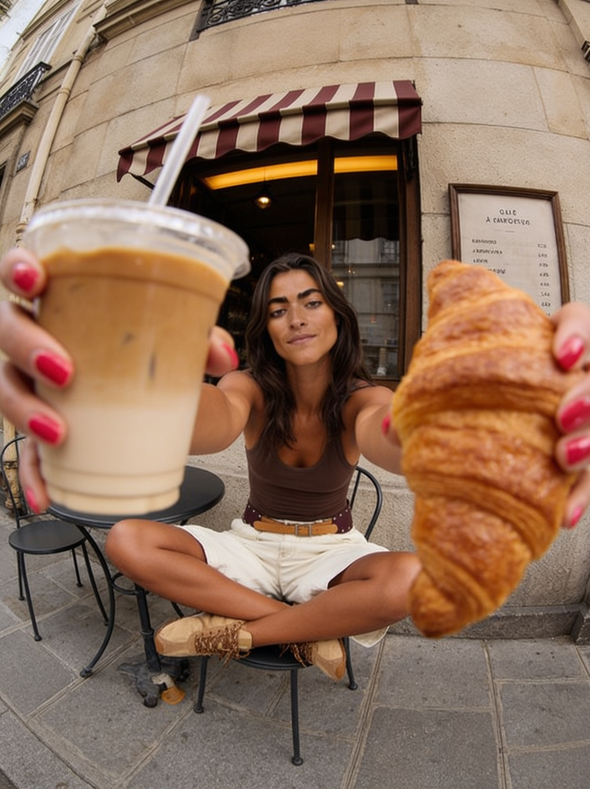